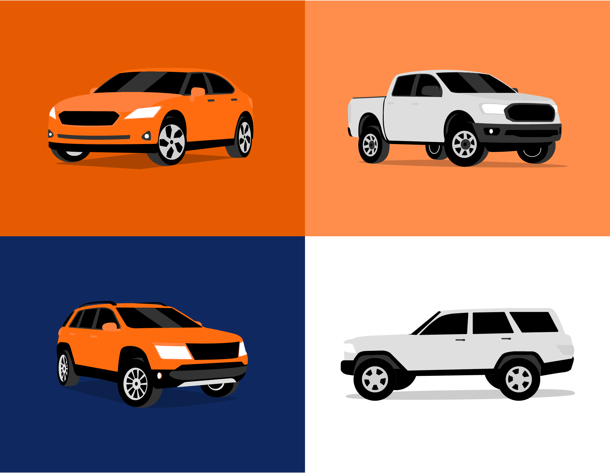

Project Template
Project Template.

These illustrations help to break up the images and text that make up a majority of the content on the site, and bring some fun, personality, and color to the brand. The style consists of three main elements: vehicles, people, and environments, as well as spot illustrations for placement within the UI where space is limited.

Vehicles
The vehicles needed a unique look and feel to everything else in the market. Utilizing a semi-realistic style that could help compliment the tone of the Autotrader brand and voice.



Vehicle Library Development
A comprehensive vehicle library was developed featuring various car types, from sedans to SUVs to trucks. Each vehicle was carefully crafted to maintain consistency while showcasing the diversity of Autotrader's inventory.
People
Establishing a character design style that was not overly trendy or cartoonish was tough to get right, but the inclusion of people helped to establish some humanity and relatability to the scenes.
Character Development
Early character sketches and development process showing the evolution from initial concepts to final illustrated characters. The goal was to create relatable, diverse characters that would resonate with Autotrader's broad customer base.
Backgrounds
Background environments were created to help establish a setting for these vehicles and people to live in. Placing a vehicle in front of a dealership, city, or landscape helped to ground them further in reality.

Environmental Elements
A comprehensive library of environmental elements was developed to create rich, detailed backgrounds. These modular components could be mixed and matched to create diverse settings while maintaining visual consistency.


Complete System Overview
The Autotrader illustration system represents a comprehensive visual language that transforms how customers interact with automotive content. By establishing consistent visual principles across vehicles, characters, and environments, we created a cohesive brand experience that spans digital platforms and marketing touchpoints.
This systematic approach ensures that every illustration maintains brand integrity while providing the flexibility needed for diverse applications – from UI micro-interactions to large-scale marketing campaigns.
In Application

The illustrations seamlessly integrate into the Autotrader platform, enhancing the user experience while maintaining brand consistency across all touchpoints.
Bringing personality to automotive.
The Autotrader illustration style successfully balances professionalism with approachability, creating a visual language that makes car shopping feel more human and engaging.